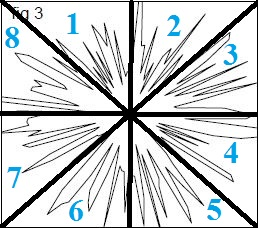
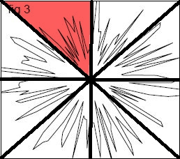
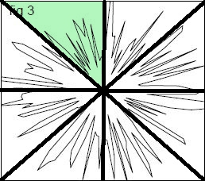
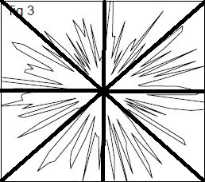
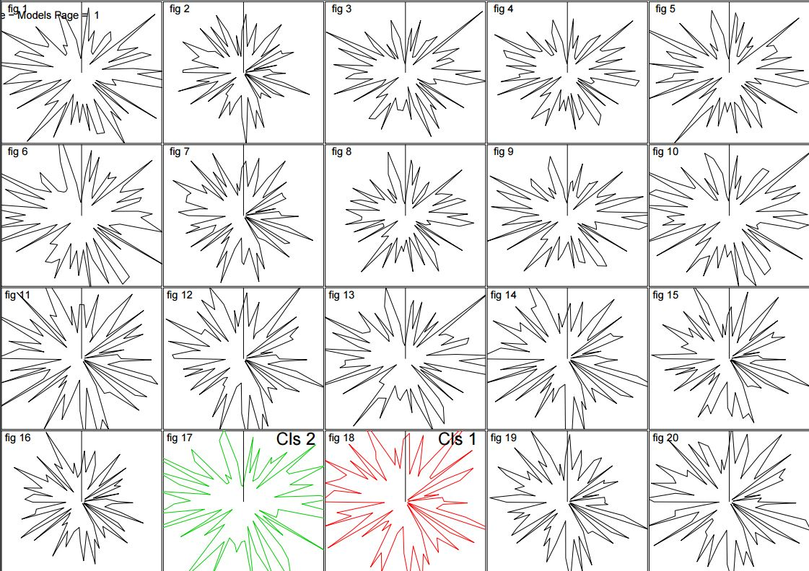

Group Members
Mitchell Hansen
Anthony Armatas
Elliott Barcoe-Walsh
What is Visual Analytics?
Visual Analytics is the practice of finding alternate representations of data with the goal being easier consumption of that data. Would you rather view your bank account balance as a 1d array of numbers? Or a line graph? Should it be colored red when your balance is low?
Unsure about how to complete a visual analytics test?
Want to try them out to see how exactly the test will function?
Just want to practice a little?
Just click on the Begin Training button below and it will show you all you need to know!
How do I choose which class each graph originated from?
Each distorted graph is divided up into sections sections. Some sections are clearer representations of the classes than others. You need to find the section which, to you, best signifies either Cls 1 or 2
By clicking on the section you believe to be the best signifier of its class, the color of that section will change to reflect that.
After the first click, the color of the chosen selection will change red to signify it has been selected as a Cls 1 graph. Clicking on it a second time will change it to green, the corisponding color of the Cls 2 graph. If clicked a third time it will revert back to its original unaltered state.
 
The two classes below Cls 1 (red) and Cls 2 (green) are multidemensional data representations of some previously generated data points. The other graphs that fill the screen are distorted versions of either Cls 1 or Cls 2. Your Job is to view these data representations and determine which class they belong to.
How do I choose which class each graph originated from?
Each distorted graph is divided up into sections sections. Some sections are clearer representations of the classes than others. You need to find the section which, to you, best signifies either Cls 1 or 2
By clicking on the section you believe to be the best signifier of its class, the color of that section will change to reflect that.
After the first click, the color of the chosen selection will change red to signify it has been selected as a Cls 1 graph. Clicking on it a second time will change it to green, the corisponding color of the Cls 2 graph. If clicked a third time it will revert back to its original unaltered state.
OVERALL RESULT:
OVERALL TIME
AVERAGE TIME SPENT ON A GRAPH:
MOST MISSED GRAPH TYPE:
KEY SECTIONS SELECTED:
The Make Up Of The Template
asdfoijadsfio
|
|